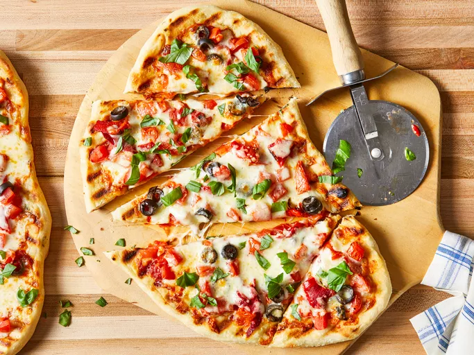
No pizza oven? No problem! Make your homemade pizza on the grill for that classic smoky, wood-fired flavor. The high heat creates a crisp crust with lightly charred edges, similar to what you would get from a traditional pizza oven. It is a great option for warm weather cooking and keeps the heat outside instead of in your kitchen. And even if you have a pizza oven, the grill is a great option when you want something a little easier but just as delicious.
This grilled pizza is topped with tomato sauce, tomatoes, black olives, roasted red peppers, mozzarella cheese, and fresh basil for a classic combination of savory, tangy, and fresh flavors. The heat of the grill gives the crust a lightly charred, smoky taste that pairs perfectly with the melted cheese and vibrant toppings. Of course, you can switch things up with whatever toppings you like—try different cheeses, add your favorite meats, or keep it simple with just a few fresh ingredients.
Pair this grilled pizza with a side salad, such as Classic Restaurant Caesar Salad. If you want to put the hot grill to more use, try Grilled Garlic Bread or Grilled Romaine.
Gather all ingredients.
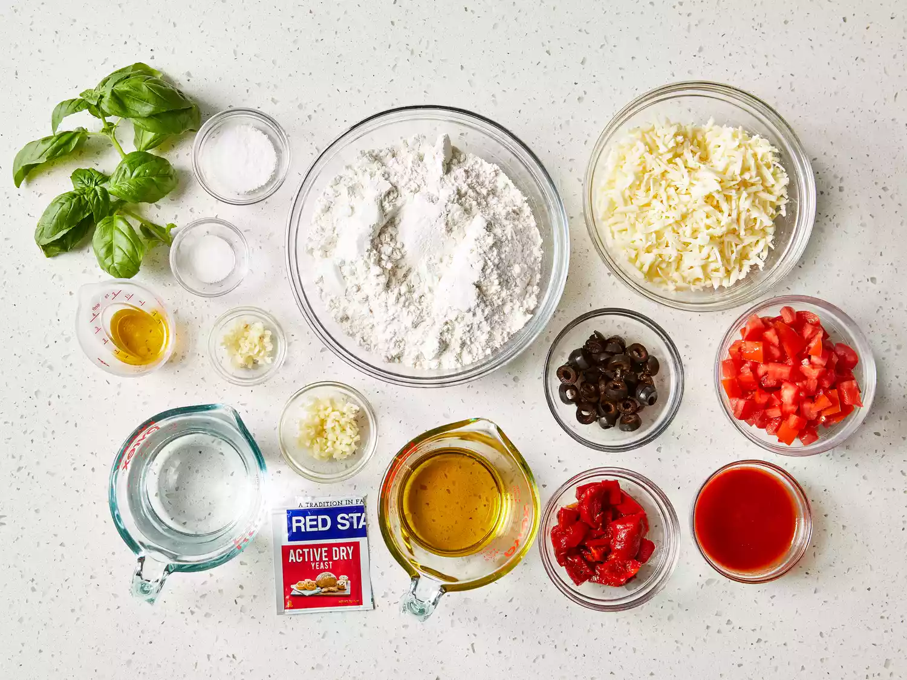
To make the dough: Pour warm water into a large bowl; dissolve yeast and sugar in warm water. Let stand until yeast softens and begins to form a creamy foam, about 5 to 10 minutes.
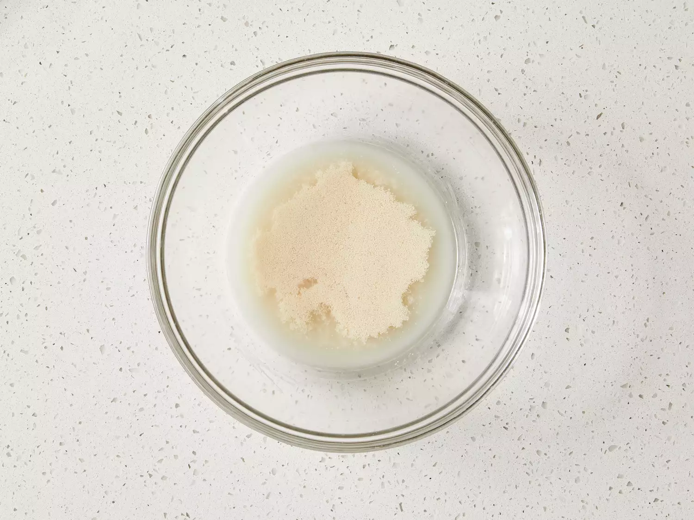
Mix in flour, 1 tablespoon olive oil, and salt until dough pulls away from the sides of the bowl.
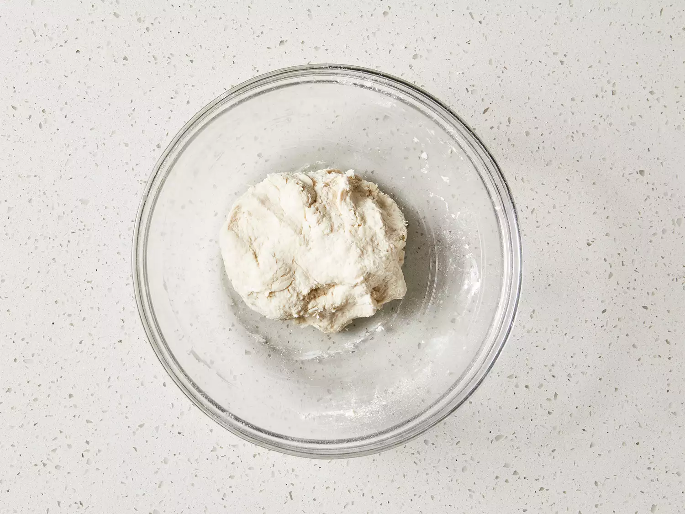
Turn onto a lightly floured surface. Knead until smooth, about 8 minutes.
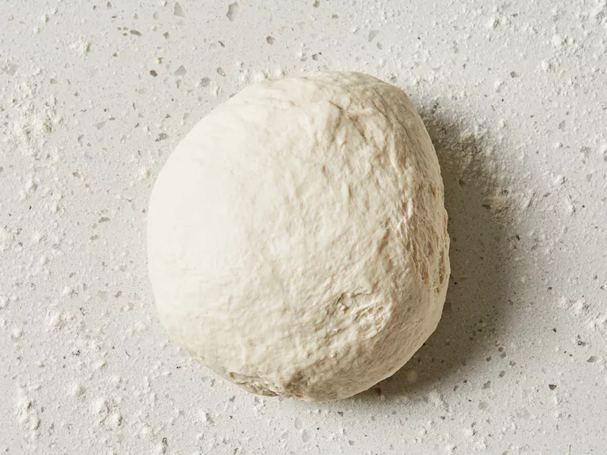
Place dough in a well-oiled bowl and cover with a damp cloth.
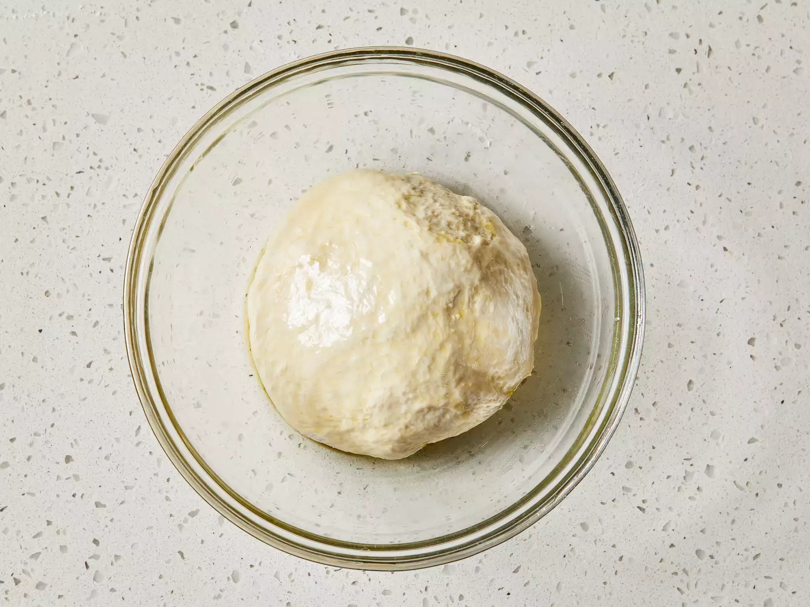
Place dough in a well-oiled bowl and cover with a damp cloth.
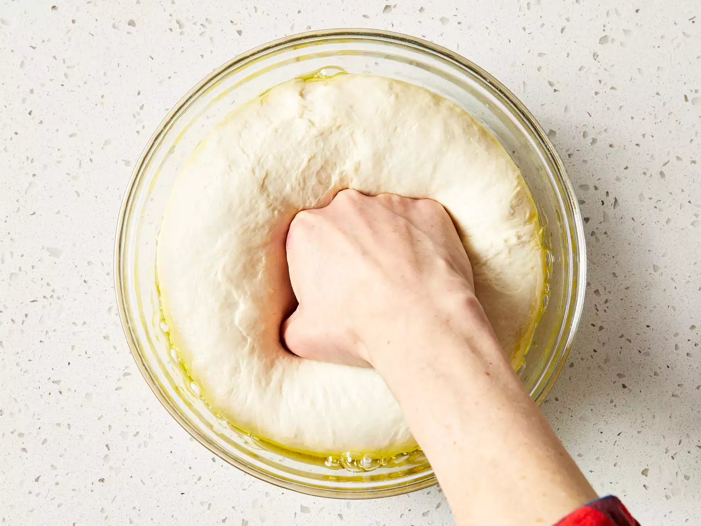
Place dough in a well-oiled bowl and cover with a damp cloth.
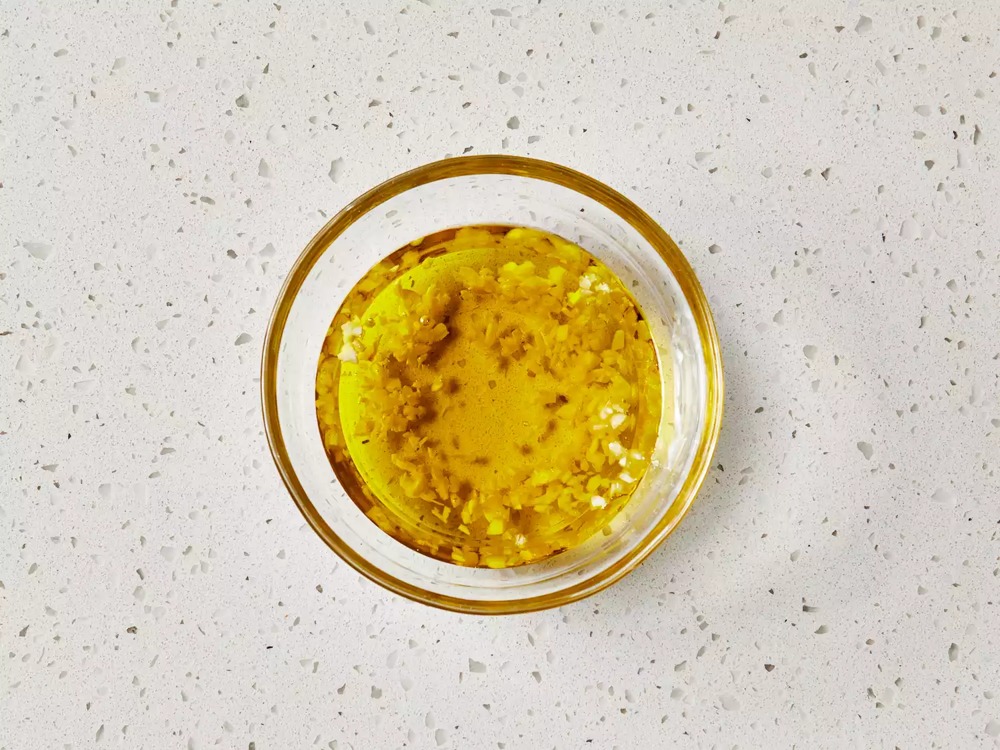
Preheat an outdoor grill for high heat; brush the grate with garlic oil.
To make the pizzas: Punch down dough and divide in half. Form each half into an oblong shape 3/8 to 1/2 inch thick.
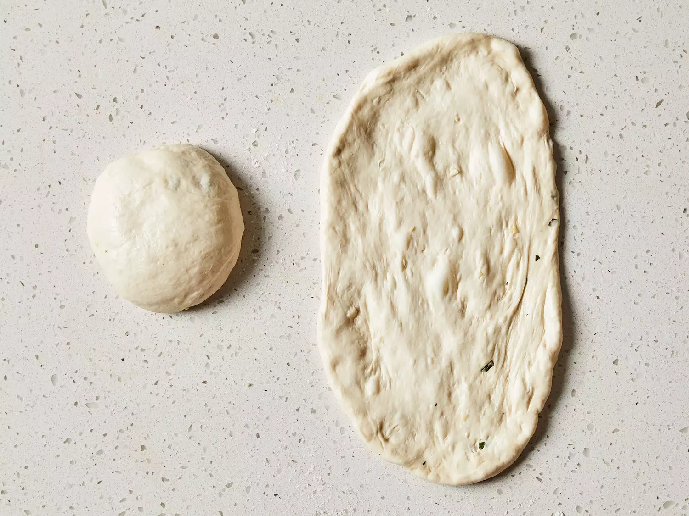
Carefully place one piece of dough on the hot grill. Dough will begin to puff almost immediately. When the bottom crust has lightly browned, turn dough over using two spatulas.
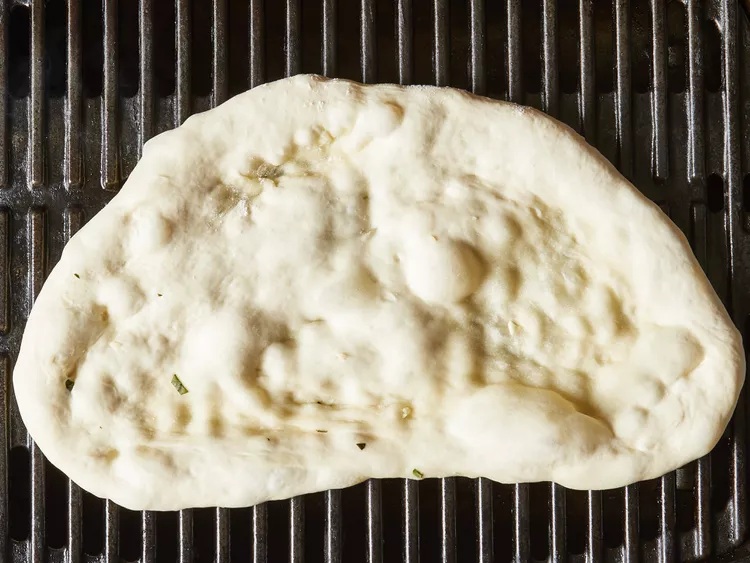
Working quickly, brush garlic oil over crust.
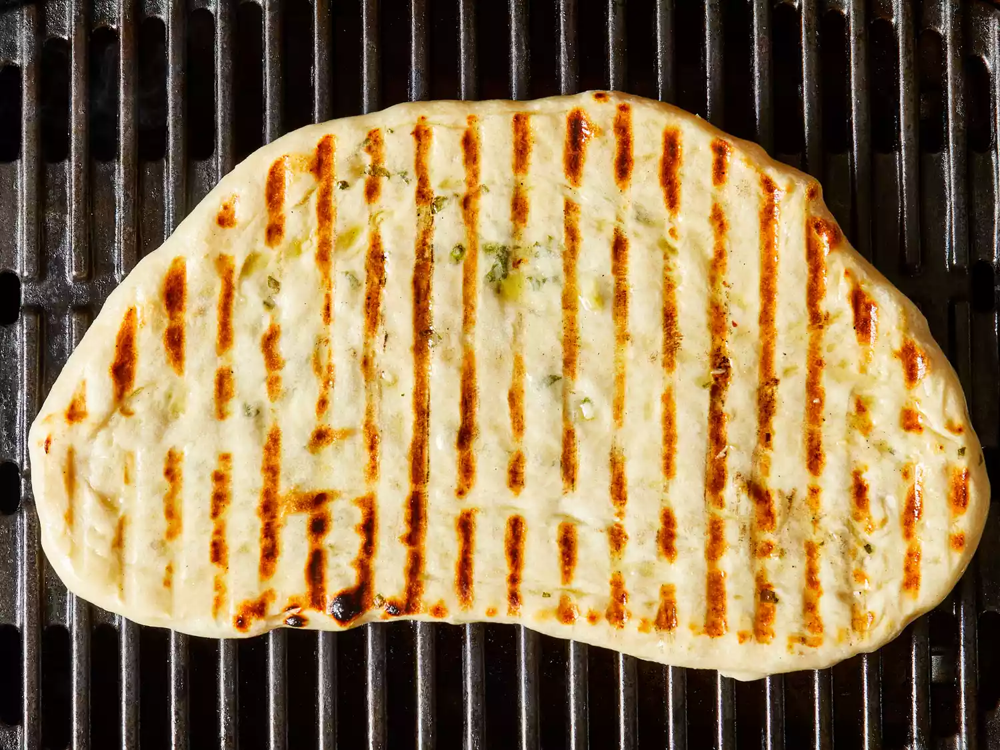
Top with 1/2 of each of the following: tomato sauce, chopped tomatoes, olives, red peppers, cheese, and basil.
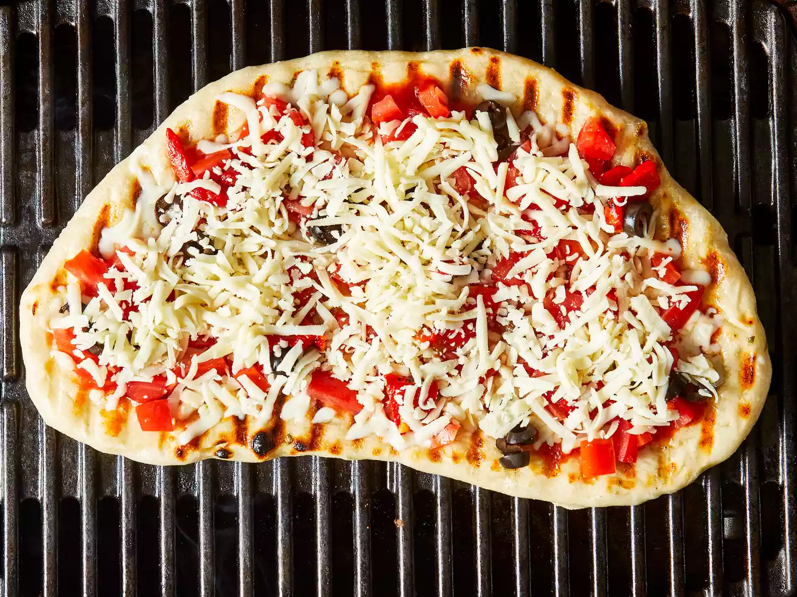
Close the lid and cook until cheese melts. Remove from grill and set aside to cool for a few minutes. Repeat with second piece of dough.
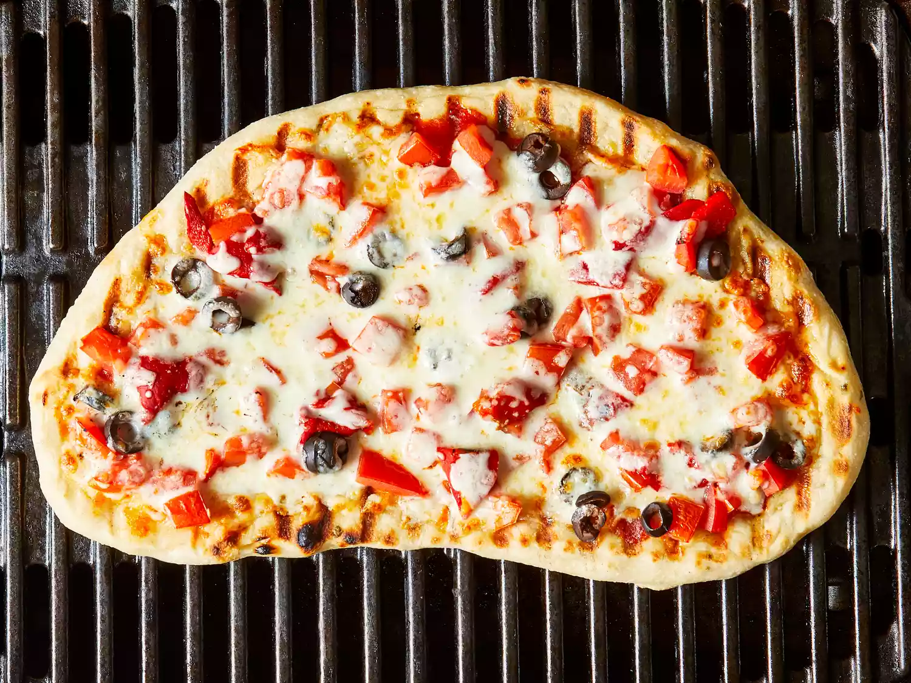
Serve hot and enjoy!
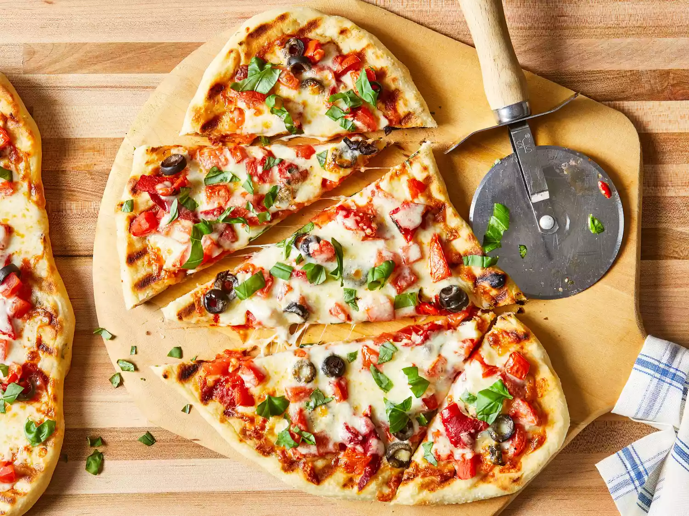